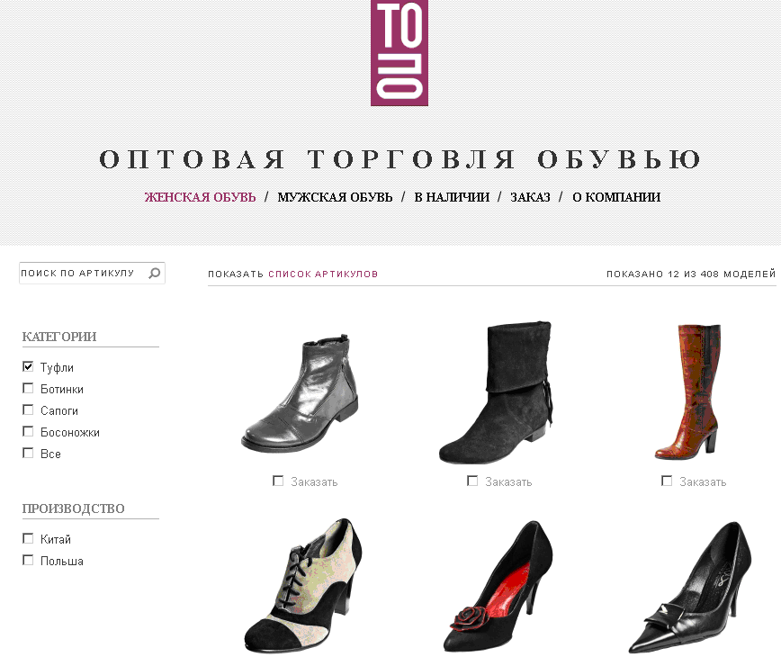

Битики некоммерческого фралансинга
"Цветная картинка к основной" (antelfashion.by)
Оригинальная ссылка
Всем добрый день!
Есть галерея Easy2 на MODx: http://www.antelfashion.by/catalog/pugovicy/plastm.... Некоторые изображения должны иметь цветной вариант пуговицы.
Задача такая: если у изображения есть вариант в цвете (отдельное изображение), то его нужно прицепить к основному изображению, и оно должно выводиться лайт-боксе при клике на кнопочку color — http://www.antelfashion.by/color.html (пример работы, изображение пока не подцепляется).
Если же дополнительного изображения нет, то color не отображается. Т.е. выводиться эскиз основного изображения и всё.
Реализация:
Админка (закачка, отображение, управление файлами), рабочий плагин сайта (в инсталляционной форме), снипет (какой-то), html шаблон, картинка для кнопки. В общем оказалось много быдлокодинга. Структуры БД я не изменял. Подвязал имена цветных файлов прямо к имени основного файла и с этой строкой работал. А также после того, как с большего всё заработало, вылезли дополнительные требования и багофичи, последнюю из них которую взялся решить только 3+ месяца спустя.
До сих пор не имею представления о том, как подобные (шлако-)вещи вообще разрабатываются, не то чтобы просто фичи добавлять, как получилось у меня... Чтобы там что-то поменять+попробовать, нужно было лазить в БД и там программить в заквотированном кавычками PHP. Получилось, ну и ладно, +2 к экспе (даже если сайт уже на другой галерее). Нехило для с виду простого задания.
Просмотр полного diff'a.: Showing 6 changed files with 287 additions and 65 deletions.
"Память чекбоксов и навигация" (TOPO.BY)
Есть вот такой сайт - http://topo.by/catalogue/female/0

В каталоге 2 линейки, влияющие на отображение товаров:
1. Выставляются настройки через чекбоксы
2. Постраничная навигация
При клике по модели - переход на детальную страницу
Нужно сделать так, чтобы при клике по кнопке "Каталог", пользователь возвращался в раздел каталога с теми же настройками (чекбоксы) и на ту же страницу, с которой он перешёл для просмотра модели.
Сейчас обнуляются и чекбоксы и пагинация. Т.е. чекбоксы сбрасываются, а постраничная навигация начинается с нуля.
Реализация:
Оказалось достаточно поковырять один JavaScript файл, находящийся в очень загадочном месте: sites/all/themes/front/js/script.js
Всё, что нужно для работы фильтров (чекбоксов) на сервере, уже было сделано автором оригинала. Только в WEB этого не было видно из-за кривоватой работы загрузки фильтров через AJAX.
Необходимо было добавить сохранение/восстановление значений в/из cookie и расстановку их по HTML элементам.
Просмотр полного diff'a.: Showing 1 changed file with 217 additions and 94 deletions.
"Интерактивное TODO" (домашний тест вакансии в Belitsoft)
Было так интересно, что за сутки сделал с нуля что-то похожее: просмотр в таблице, сортировка столбца, считаемый столбец, добавление строк, изменение булева значения, фильтрация по двум столбцам.
[Посмотреть на интерактивное TODO]
Вакансию закрыли быстрее, чем я сделал тест... Т.н. фидбэк:
: очень Сишный подход
: видно что он программировал на других языках, похоже очень на подход C,
и пытается перенести это в JavaScript. Также вижу что чутка не хватает опыта
в знаниях специфических для Javascript, но это не критично. Ну и мне бы
конечно хотелось чтобы код был больше разделен на слои model-view-whateverworksforyou
: не хватает разделения представления от данных
: есть моменты, но не критичные, которые можно подтянуть быстро
Как говориться на людей посмотрел и себя показал.
Просмотр полного diff'a.: Showing 4 changed files with 480 additions and 0 deletions.